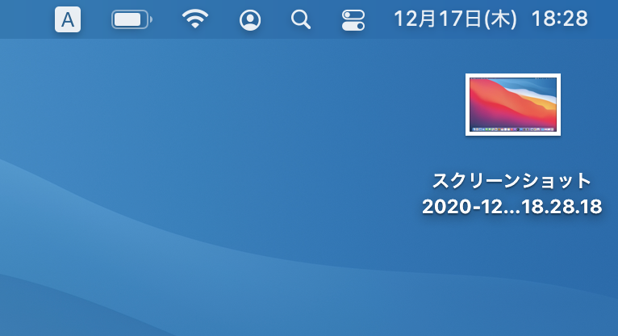
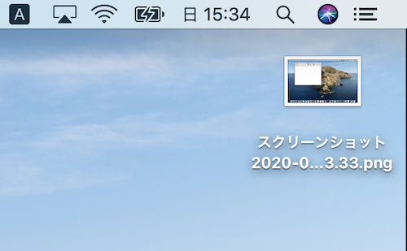
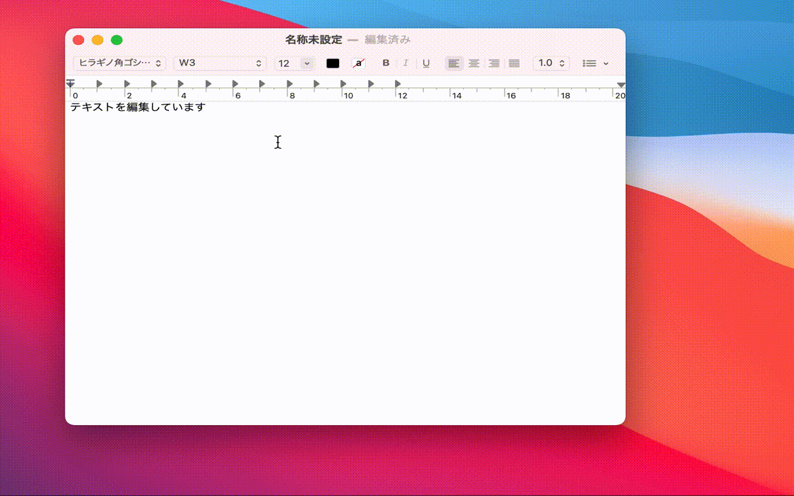
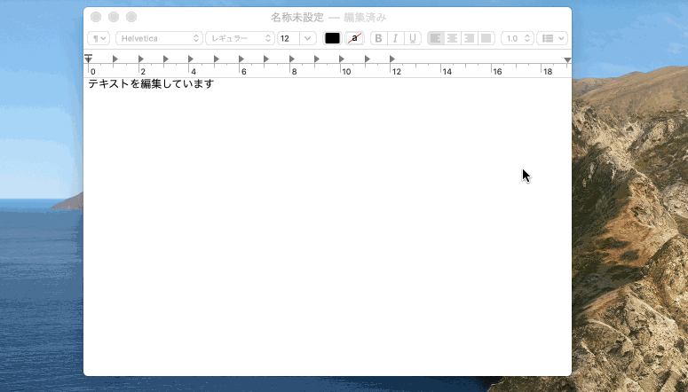
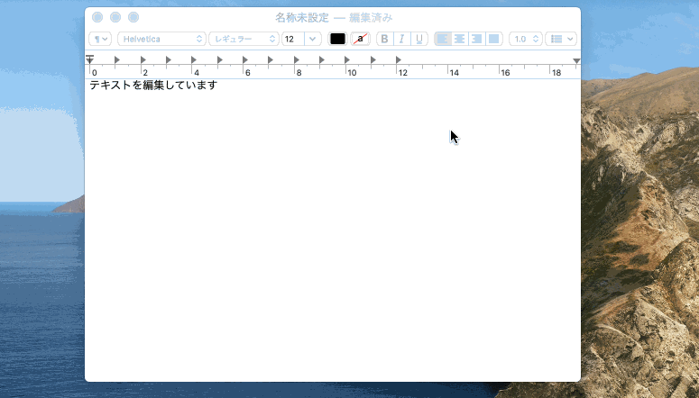

スクリーンショットを撮ってみよう
スクリーンショットとは画面の様子を記録した画像のことです。スクショと略されることもあります。
スマートフォンでもお馴染みの機能です。
PC について質問する際は、トラブルに遭遇したときのスクリーンショットを添付して質問すると、答えてもらいやすくなります。
たとえば「エラーが出ました」と書かれているだけの質問よりも、「こういうエラーが出ました」という情報がある質問の方が解決しやすくなります。
Mac でのスクリーンショット撮影方法
画面全体を撮影する
Command + Shift + 3 を同時に押すことで、画面全体を画像としてデスクトップに保存できます。
Big Sur
Catalina 以前

スクリーンショット画像のアイコン

スクリーンショット画像のアイコン
一部を切り抜いて撮影する
PC では、一部を切り抜いて撮影することもできます。
Command + Shift + 4 を同時に押すと、マウスポインタの形が変わります。 この状態で切り抜きたい範囲をドラッグ・アンド・ドロップで選択すると、画面の一部の範囲を選択して画像としてデスクトップに保存できます。
Big Sur
Catalina 以前

範囲を選択した撮影

範囲を選択した撮影
なお、Command + Shift + 4 のショートカットキーのあとスペースキーを押し、撮影したいウィンドウをクリックすることで、特定のウィンドウだけを撮影することもできます。
Big Sur
Catalina 以前
ウィンドウ単位の選択

ウィンドウ単位の選択
注意事項
撮影したスクリーンショットをネットに投稿する場合、画面内に個人情報などが写り込んでいないか注意しましょう。
特にメールアドレスや氏名など、人に見せたくない情報を表示させている場合は要注意です。
動画のキャプチャー
ここでは詳細を説明しませんが、画面上の動きを動画で記録することもできます。これを「動画キャプチャー」といいます。
興味がある人は、以下のサイトを参考にしてみてください。